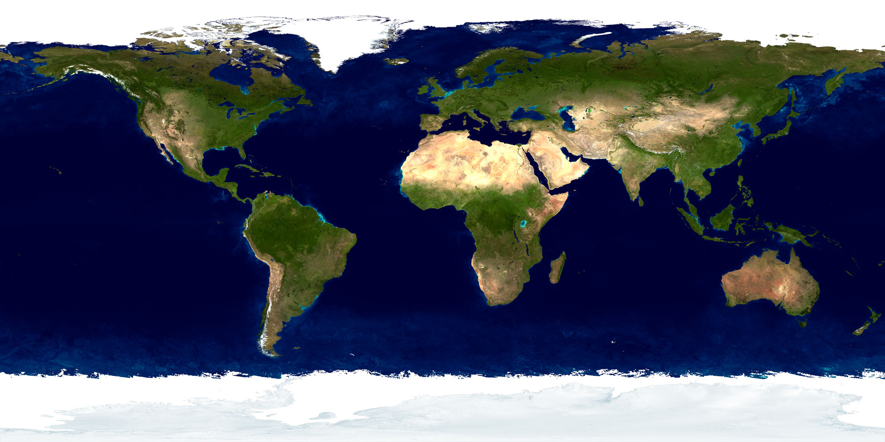

Oceano Pacífico
O maior oceano do planeta abriga ambientes tropicais, temperados, polares e profundas regiões oceânicas.
DISTRIBUIÇÃO GLOBAL
Explore diferentes regiões do planeta e descubra espécies de estrelas-do-mar associadas a cada ambiente.

AMÉRICA DO NORTE AMÉRICA DO SUL EUROPA ÁFRICA ÁSIA OCEANIA ANTÁRTIDA PACÍFICO ATLÂNTICO ÍNDICOOCEANOS
O maior oceano do planeta abriga ambientes tropicais, temperados, polares e profundas regiões oceânicas.
Reúne costas rochosas, fundos arenosos, águas tropicais e ambientes profundos.
Possui extensas regiões tropicais e recifes com grande biodiversidade marinha.
DISTRIBUIÇÃO
As estrelas-do-mar são animais exclusivamente marinhos. Elas podem viver em águas rasas próximas à costa, em recifes, fundos arenosos, regiões rochosas e até em ambientes oceânicos profundos.